Create and View Dashboards
In these exercises you create the dashboards in Monitor.
- Create an Asset dashboard provides individual asset performance for the pump selected.
- View an Asset dashboard
- Create an Asset Type dashboard that summarizes performance across multiple assets of type pump_co
Create Asset Dashboard in Monitor
-
In Monitor, click
Setuptile 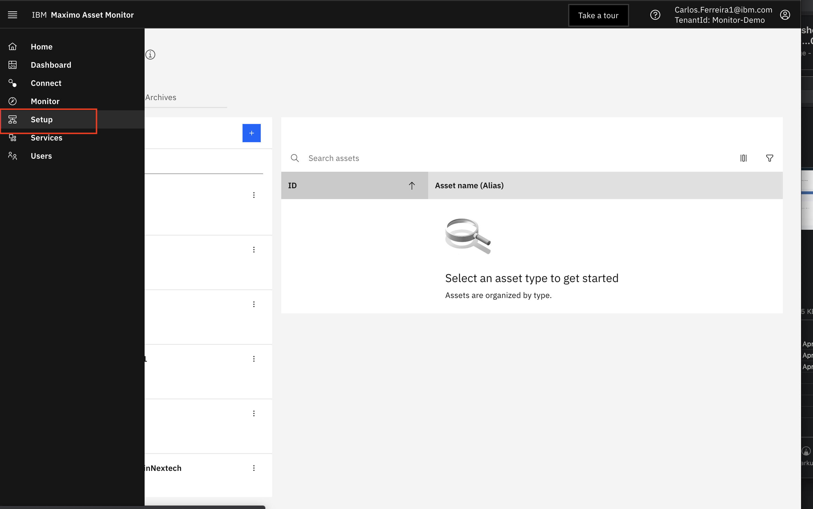 -
Enter
pump_coin the search field and then clickpump_co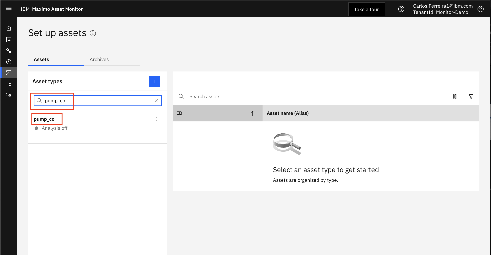 -
Click on the link for
111137F8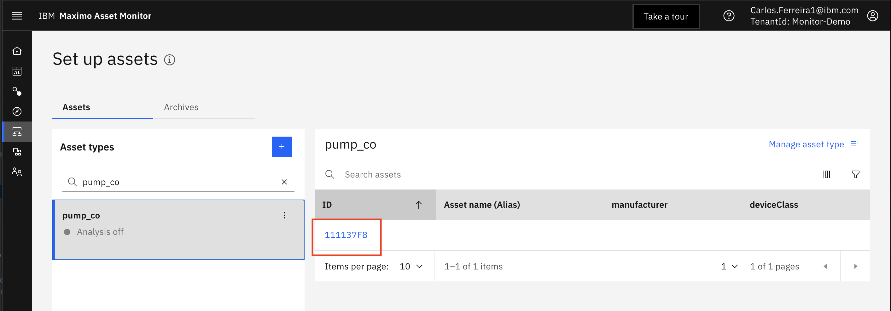 -
Click
Dashboardstab 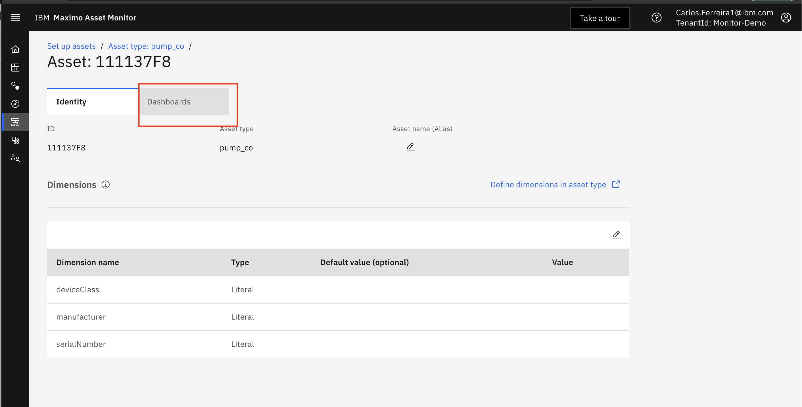 -
Click
:icon and selecteditto edit the dashboard 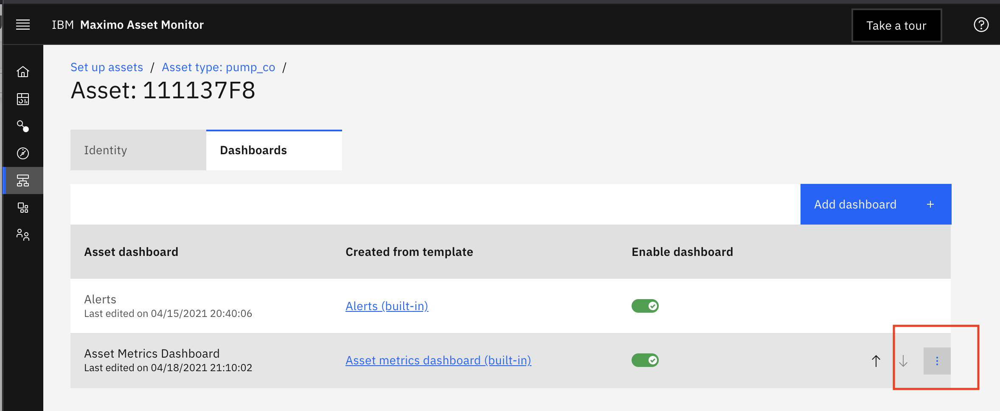 -
Click
importicon 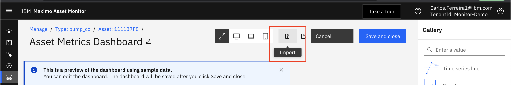 -
Browse to the
dashboardsfolder and select the asset-instance-dashbard.json file
-
Click
Save and closebutton 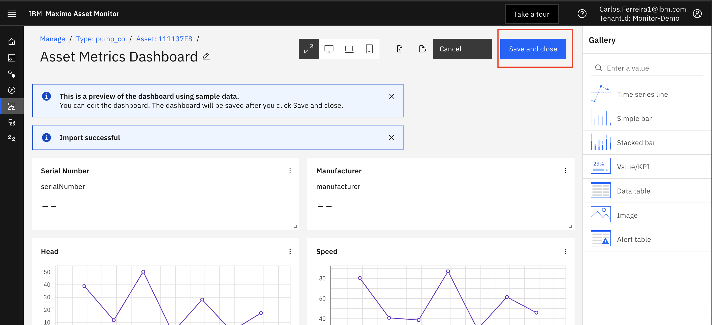
View Asset Dashboard in Monitor
-
Click
Monitormenu 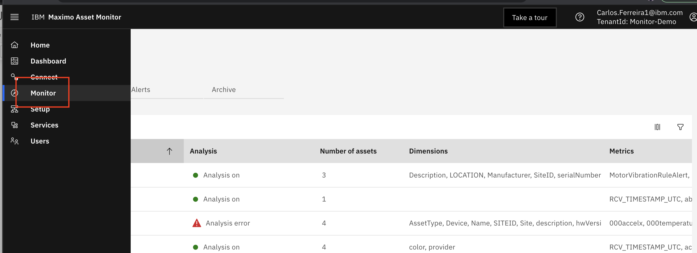 -
Search for
pump_coin the search field 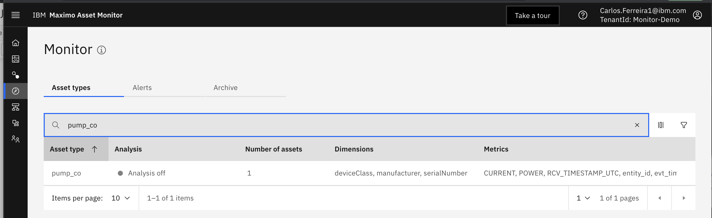 -
Click
111137F8asset 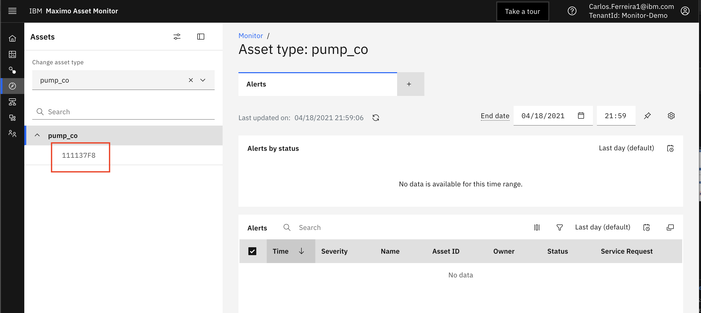 -
Click
Asset Metrics Dashboardtab 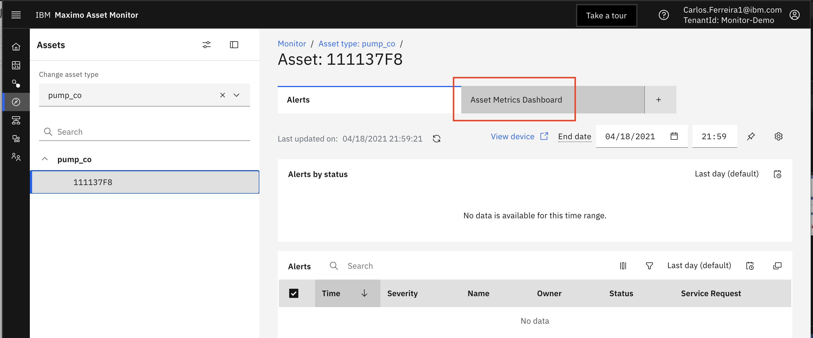 -
View dashboard 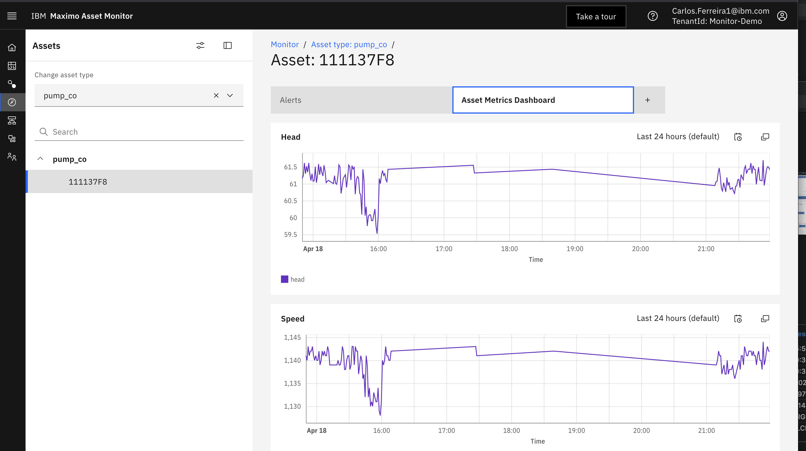
Congratulations you imported and viewed an Asset Dashboard.
Create Summary Asset Type Dashboard in Monitor
-
In Monitor, click
Setupmenu -
Enter
pump_coin the search field and then clickpump_coin results. -
Then click
Manage Asset Typeslink 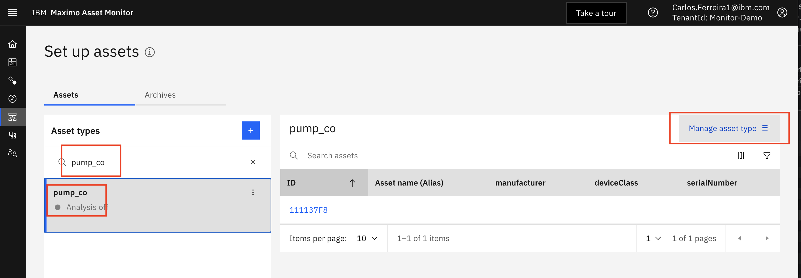 -
Click
Dashboardstab 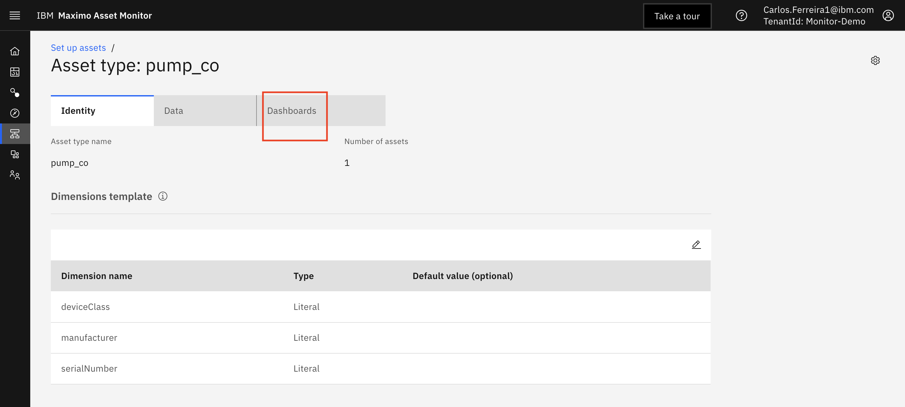 -
Make note of the
DailyTime grain selected. This means that the dashboard will aggregate calculations for the 24 hours. So the maximum, minimum, mean and last values will be calculated for the last 24 hours. Dimensions selected are used to further filter the displacyed calculated metrics just for those assets. Select theserialNumberdimension. This will allow you to choose just one asset of that type in the dashboard. ClickAdd Dashboardbutton 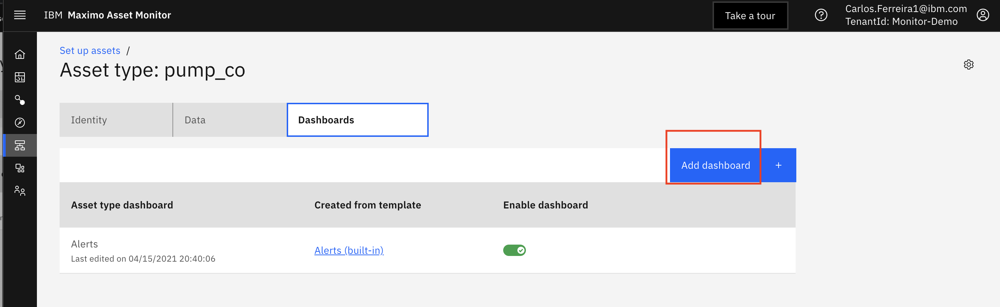 -
Make note of the
DailyTime grain selected. This means that the dashboard will aggregate calculations for the 24 hours. So the maximum, minimum, mean and last values will be calculated for the last 24 hours. Dimensions selected are used to further filter the displacyed calculated metrics just for those assets. Select theserialNumberdimension. This will allow you to choose just one asset of that type in the dashboard. ClickNextbutton 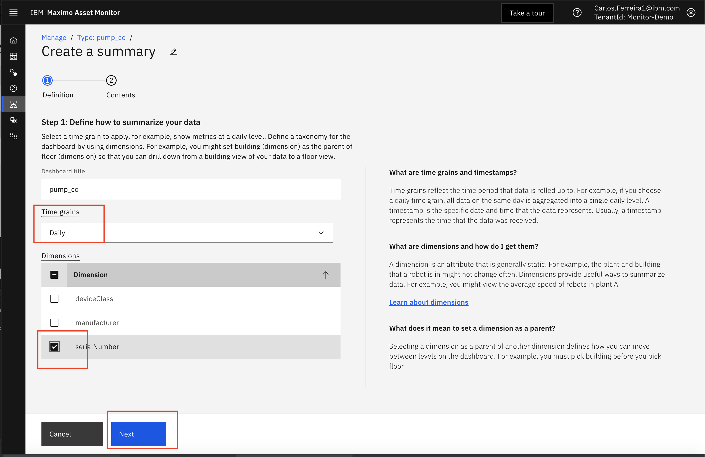 -
Select
pump_modeandlastfrom theMethodsdrop down field to calculate the last value in the last 24 hour day.
Then click onConfigure Dashboardbutton 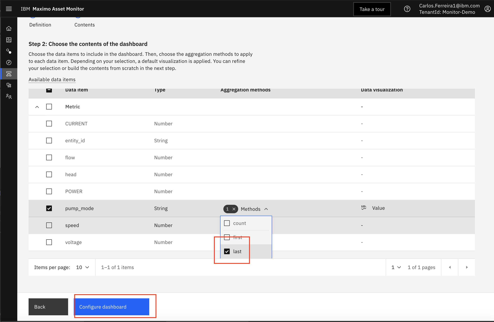 -
Browse to the
dashboardsfolder and select the asset-instance-dashbard.json file -
Click
Createbutton
-
Monitor is processing the metric calculations for the selected aggregation period. Note the
Preparing Dashboardsmessage 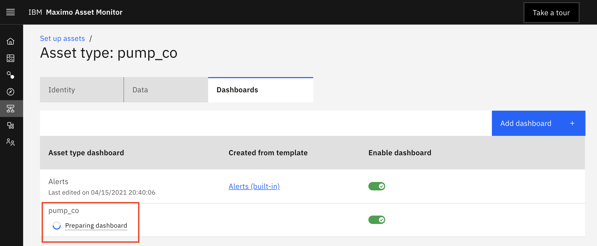
Return back to this screen to see the dashboard once the calculations have completed processing.
Congratulations you imported and created an Asset Type Dashboard that calculated aggregated values for a selected time period Monitor provide hourly, daily, monthly and yearly aggregation periods you can use on the dashboard.